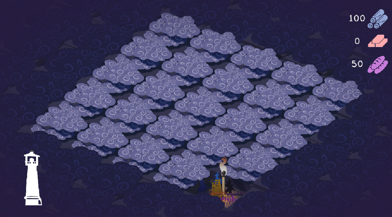

Nordic Game Jam 2026 · Game Jam
Against the Fog
Atmospheric survival city builder where players push back fog, manage resources, and build a lighthouse.
- Role
- Lead Game Developer
- Timeline
- 2 days
- Team Size
- 5 people

Project highlight
My first in-person jam (not online-only): led a team of five people I met for the first time and we still shipped a cohesive build—no integration blockers—within about a day and a half of focused production time.
What I built
- Drove the project to completion as the lead gameplay programmer in a team of five people I had just met.
- Created all core gameplay systems and implemented most of the art assets.
Challenges
- Delivered a polished strategic experience in a 48-hour jam scope with lead-level technical ownership.
Results & impact
- Playable jam build delivered for Nordic Game Jam 2026.